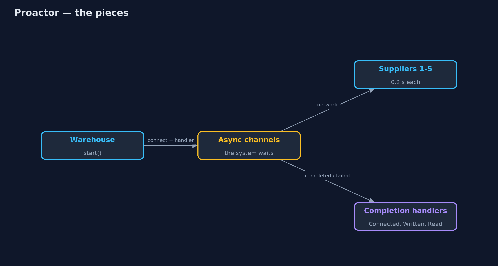
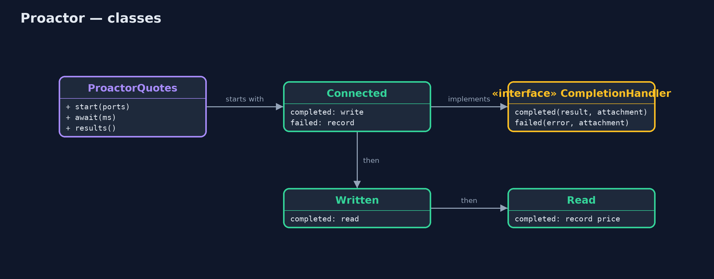
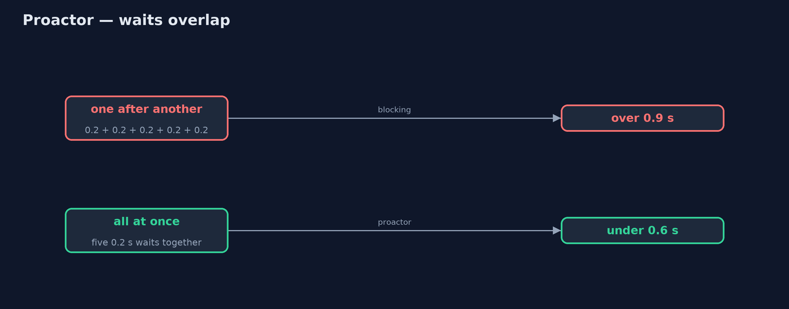
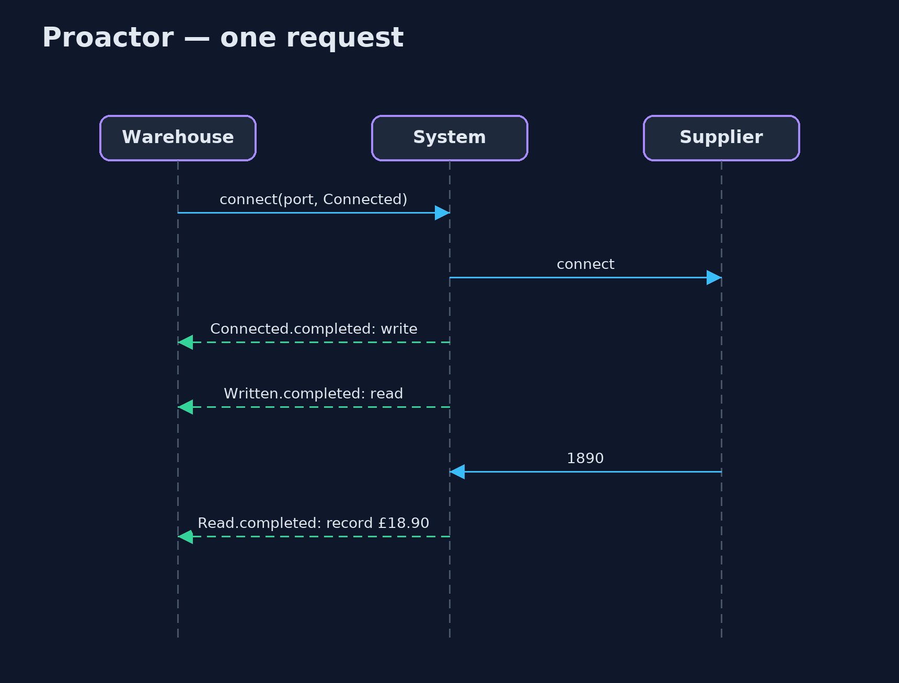

Proactor Pattern
src/main/java/com/jk/explore/proactor/
├── BlockingQuotes.java Without the pattern: ask each supplier in turn, and wait for each answer before asking the next
├── ProactorDemo.java The five acts: asking suppliers one by one, starting every request at once, completion handlers, a failure as a completion, and the bill
├── ProactorQuotes.java The pattern: start every operation at once, and let the system call a completion handler when each one finishes
└── Supplier.java A supplier's price server on this machine: answers "price KETTLE-1" with its price in pence, after 200 msStart slow operations without waiting for them, and give each one a completion handler that the system calls when it finishes, successfully or not.
Proactor is a concurrency pattern for slow input and output, such as network calls. Instead of starting an operation and waiting for it, the program starts it and hands over a completion handler: a small object that says what to do when the operation finishes, and what to do if it fails. The system does the waiting and calls the handler when the result is ready.
Many operations can then be in flight at once from a single caller, and their waiting overlaps. Java's asynchronous channels (AsynchronousSocketChannel, AsynchronousFileChannel) and CompletionHandler are a direct implementation.
The idea in everyday terms
Think of a food court with a buzzer at every stall. You order at five stalls, one after another, and each hands you a buzzer. You do not queue at a stall until your dish is cooked. You sit down, and as each buzzer goes off, you go and collect that dish. If one stall runs out of what you ordered, its buzzer goes off too, and they tell you.
The scenario
The online store's warehouse buys kettles from five suppliers. Before each order it asks all five for today's price and picks the cheapest. Each supplier takes 0.2 seconds to answer, and the warehouse asked them one after another, waiting for each answer before asking the next: over a second every time.
Run
./gradlew runThe demo tells the story in 5 acts, each printing exact numbers that the tests check:
| Act | What it shows |
|---|---|
| 1. One after another | Five suppliers at 0.2 s each, asked in turn: 5 prices in over 0.9 s, the asking thread blocked throughout. |
| 2. Start everything at once | All 5 requests start and start() returns in under 0.1 s; all 5 answers arrive in under 0.6 s. |
| 3. Completion handlers | The read handlers record £21.00, £19.50, £22.40, £18.90 and £20.10; the cheapest is £18.90. |
| 4. A failure is a completion | Supplier 6 is down: its failed() handler runs; the other 2 answer as normal. |
| 5. The bill | One request is spread across Connected, Written and Read handlers; the steps no longer read top to bottom. |
Test
./gradlew test7 tests in DemoRunsTest, ProactorQuotesTest. Every number the demo prints is asserted, and nothing depends on the clock, so every run gives the same result.
Technologies and versions
| Technology | Version | Used for |
|---|---|---|
| Java | 21 | the code (toolchain set in build.gradle) |
| Gradle | 9.2.1 (wrapper) | build and run, nothing to install |
| JUnit | 5.10.2 | the tests |
| videokit | repository tool | the narrated video and animation: Piper en_US-amy-medium, speed 0.8, longer pauses (the approved amy-slow voice) |
Learning Material
| Document | What it is for |
|---|---|
| Problem statement | the situation and what the project must show |
| Prerequisites | what you need to know first |
| Proactor, explained | the acts in prose |
| Session guide | a one-hour lesson with exercises |
| Animated walkthrough | the acts step by step, narrated |
| Spec | what this project must be true of |
The pattern in one picture
The caller starts; the system waits; handlers finish the work.

Where each piece sits
Three small handlers, chained.

How the data moves
Five 0.2 s waits, side by side instead of end to end.

Who calls whom, in order
Three completions, three handlers.

Video
video/proactor-pattern-explained.mp4 (with .m4a audio and .srt subtitles) is built by video/build_video.sh. Rendered media is not committed.
What it costs
- One request, several callbacks. Connect, write and read each finish in a different handler; the steps no longer read top to bottom.
- Harder debugging. Stack traces start in the system's threads, not in the code that started the work.
- Shared results. Handlers run on other threads, so results must be collected safely.
When this is too much
When operations are few, fast or must happen in order, plain blocking calls are clearer. And in modern Java, virtual threads let you write blocking code that waits just as cheaply; CompletableFuture or a reactive library gives a friendlier face to the same idea.
Where you have already met this
AsynchronousSocketChannelandCompletionHandlerin Java NIO.2.HttpClient.sendAsyncandCompletableFuture.thenAccept.- Windows I/O completion ports and Linux io_uring, which the pattern is named after.
- Callbacks in JavaScript's Node.js file and network APIs.
Where this sits
This project is in concurrency-design-patterns, next to Reactor, which is told when an operation can be done; a proactor is told when it has been done.